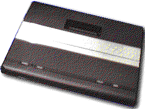

Previous
Next
TOC
Das Atari Video Computer System 7800

Atari 7800 Cartridgesockel
Oberseite
R/W HALT
D3
D4
D5
D6
D7
A12
A10
A11
A9
A8
+5V
--1- --2- --3- --4- --5- --6- --7- --8- --9- -10- -11- -12- -13-
A15
EA
A7
A6
A5
A4
A3
A2
A1
A0
D0
D1
D2
Unterseite
GND
A13
A14
-14- -15- -16-
GND
IRQ
CLK2
EA - Enable Audio
X2 - Enable $40-4F (Chipselect)
Ai - Audio In
Atari 7800 Expansionsockel
Oberseite
GND
+5V
CV
ML0
ML3
BLK
OD
EM
GND
--1- --2- --3- --4- --5- --6- --7- --8- --9-
GND
Ao
RDY
MCOL ML2
ML1
MS
CLK2 EO
Unterseite
CV - CVideo (Input to RF modulator (Video+Audio))
ML0 - MLum0 (Maria Luminance Bit 0)
ML1 - MLum1 (Maria Luminance Bit 1)
ML2 - MLum2 (Maria Luminance Bit 2)
ML3 - MLum3 (Maria Luminance Bit 3)
BLK - Blanksignal
OD - OscDis (Disable 14.31818 MHz Master Clock)
EM - External Maria Enable Input
Ao - Audio Out
E0 - External clock to replace Master Clock
CLK2 - Phase 2 Clock from the 6502
MS - Maria Composite Sync
MCOL - Maria Color Phase Angle
RDY - Input to the 6502
weiterblättern
Kapitel Das Atari Video Computer System 7800, Seite 1